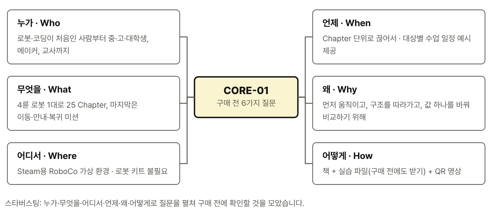

『피지컬 AI로 배우는 RoboCo 로봇 구조와 Python 제어』은 종이책(POD)과 전자책으로 만나볼 수 있습니다. 아래 서점에서 제목으로 검색한 결과가 열립니다.

종이책
전자책
영어판
출간 예정English edition
실습 파일 — 로봇 파일 2종·시작 파일·Educational Library·실험·미션 기록지는 구매 전에도 미리 내려받아 RoboCo에서 열어 볼 수 있습니다. 실습 순서와 원리는 책에서 다룹니다. 실습에는 Steam용 RoboCo가 필요합니다. 실습 파일 내려받기